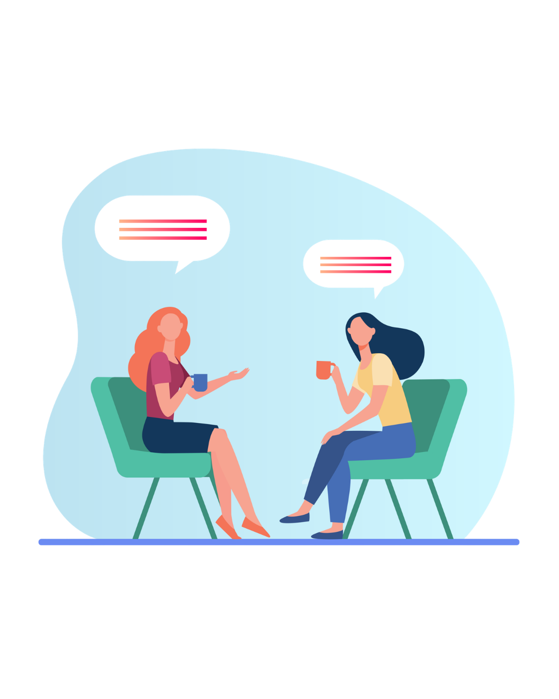

Equilíbrio emocional através da
Neuropsicologia e da Psicoterapia
Sou Elisama Gonçalves, Neuropsicóloga 🧠 dedicada a integrar o funcionamento do cérebro com o bem-estar da mente. Vamos juntos transformar seus processos cognitivos em força emocional.
Áreas de Atuação
Tratamentos e demandas mais frequentes que atendo atualmente
Ansiedade
Preocupação constante e pensamentos acelerados que dominam a rotina. Vamos buscar o equilíbrio necessário para o seu dia a dia.
Depressão
Um olhar cuidadoso sobre a tristeza profunda e a falta de prazer, resgatando o sentido e a vitalidade através da neuropsicologia.
Traumas
Ressignificar experiências dolorosas para que elas deixem de paralisar o seu presente e o seu futuro.
TOC
Lidar com pensamentos repetitivos e comportamentos compulsivos através de uma compreensão profunda dos ciclos mentais.
Abordagem Clínica
Trabalho com uma perspectiva que busca compreender o ser humano em sua totalidade. Através da neuropsicologia, integramos o funcionamento cognitivo com as demandas emocionais, permitindo um olhar profundo sobre seus padrões e comportamentos.
O processo ocorre de forma colaborativa, focando em parcerias que geram sigilo, ética e significado para sua jornada.

Sobre mim
Olá, sou Elisama Gonçalves. Minha trajetória na psicologia é marcada pelo desejo de reconectar pessoas à sua verdade interna. Como Neuropsicóloga 🧠, utilizo o estudo da psique e do sistema nervoso para favorecer o autoconhecimento e a saúde mental.
Meu objetivo é oferecer um espaço seguro onde cada história seja respeitada e cada vivência possa ser ressignificada com clareza e acolhimento.
Benefícios da Psicoterapia

Ajuda no amadurecimento psicológico e emocional para lidar com desafios.
Ajuda você a reconhecer suas qualidades, potenciais e talentos ocultos.
Melhora a atenção, percepção, criatividade e discernimento.
Técnicas aplicadas com eficiência para aliviar o sofrimento emocional.
Fortalece a autonomia, liberdade e expressão como parte do desenvolvimento.
Ajuda a manter uma relação positiva e harmoniosa consigo mesmo(a).
Compreensão sobre relacionamentos, comunicação e interações.
Proporciona maior qualidade de vida, bem-estar e autoconsciência.
Depoimentos
"As sessões me ajudaram a compreender aspectos da minha história que eu nunca havia percebido. O processo é conduzido com ética, cuidado e uma escuta que realmente transforma."
"Encontrei na Elisama um suporte fundamental para lidar com meus traumas antigos. Com sua escuta acolhedora, aprendi a reconstruir minha autoestima de forma verdadeira."
"A neuropsicologia mudou minha percepção sobre como meu cérebro funciona. Hoje consigo gerenciar minha ansiedade com ferramentas práticas e autoconhecimento."
Como agendar sua consulta?
Entre em Contato
Para dar início ao processo, envie uma mensagem via WhatsApp. Em seguida, realizaremos uma breve conversa.
Contato Inicial
Durante o primeiro contato, abordaremos suas necessidades e o motivo que o(a) levou a buscar a consulta. Também explicarei o funcionamento das terapias. Nesse momento, combinaremos o dia e horário da sua primeira sessão, além de alinharmos outras informações relevantes.
Preenchimento do Prontuário
O preenchimento do prontuário poderá ser realizado de forma online e individual, ou com o auxílio do psicólogo, visando a coleta de informações pessoais essenciais.
Confirmação da Consulta
As sessões são, preferencialmente, realizadas de forma online. Você receberá um link de acesso a uma plataforma segura. Recomenda-se que esteja em um ambiente reservado, silencioso e sem interrupções. Utilize fones de ouvido, se possível, e verifique o funcionamento do microfone e da câmera do seu dispositivo.